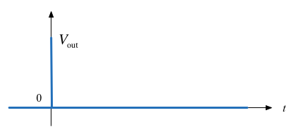
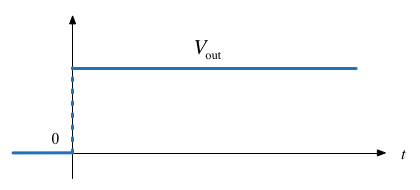
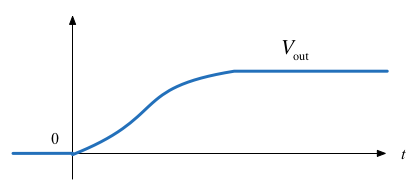
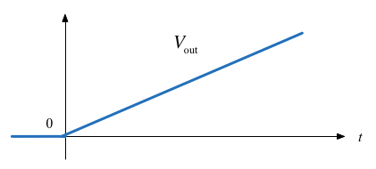
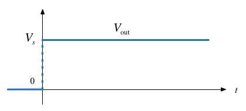

Lecturer: Set up MATLAB
clear all
format compact
Colophon
This worksheet can be downloaded as a PDF file.
A printout of this worksheet will be distributed before the first class meeting in the Week 1: Classroom Activities section of the Canvas site. I will also distribute a copy to your personal Worksheets section of the OneNote Class Notebook so that you can add your own notes using OneNote.
You are expected to have at least watched the video presentation of Chapter 2 of the notes before coming to the first class. If you haven't watch it afterwards!
After class, the lecture recording and the annotated version of this worksheet will be made available to you via OneNote and through Canvas.
Q1: What happens before $t=0$?
- $v_{\mathrm{out}} = \mathrm{undefined}$
- $v_{\mathrm{out}} = 0$
- $v_{\mathrm{out}} = V_s$
- $v_{\mathrm{out}} = V_s/2$
- $v_{\mathrm{out}} = \infty$
Q2: What happens after $t=0$?
- $v_{\mathrm{out}} = \mathrm{undefined}$
- $v_{\mathrm{out}} = 0$
- $v_{\mathrm{out}} = V_s$
- $v_{\mathrm{out}} = V_s/2$
- $v_{\mathrm{out}} = \infty$
Q3: What happens at $t=0$?
- $v_{\mathrm{out}} = \mathrm{undefined}$
- $v_{\mathrm{out}} = 0$
- $v_{\mathrm{out}} = V_s$
- $v_{\mathrm{out}} = V_s/2$
- $v_{\mathrm{out}} = \infty$
Q4: What does the response of $V_{\mathrm{out}}$ look like?
Circle the picture you think is correct on your handout.
| A |  | B |  |
| C |  | D |  |

In Matlab
In Matlab, we use the heaviside function (Named after Oliver Heaviside).
syms t
ezplot(heaviside(t),[-1,1])
heaviside(0)
See: heaviside_function.m
Note that, so it can be plotted, Matlab defines the heaviside function slightly differently from the mathematically ideal unit step:
$$\mathrm{heaviside}(t) = \left\{ {\begin{array}{*{20}{c}} {0\quad t < 0}\\ {1/2\quad t = 0}\\ {1\quad t > 0} \end{array}} \right.$$
- $-Au_0(t + T)$
- $-Au_0(-t + T)$
- $-Au_0(-t - T)$
- $-Au_0(t-T)$


Show that the voltage across the capacitor can be represented as
$$v_C(t)=\frac{i_s}{C}t u_0(t)$$and sketch the wave form.
The unit ramp function is defined as
$$u_1(t) = \int_{-\infty}^{t}u_0(\tau)d\tau$$so
$${u_1}(t) = \left\{ {\begin{array}{*{20}{c}} {0\quad t < 0}\\ {t\quad t \ge 0} \end{array}} \right.$$and
$$u_0(t) = \frac{d }{dt}u_1(t)$$Note
Higher order functions of $t$ can be generated by the repeated integration of the unit step function.
For future reference, you should determine $u_2(t)$, $u_3(t)$ and $u_n(t)$ for yourself and make a note of the general rule:
$$u_{n-1} = \frac{1}{n}\frac{d}{dt}u_n(t)$$Details are given in equations 1.26—1.29 in the textbook.

Notes
To solve this problem we need to invent a function that represents the derivative of the unit step function. This function is called $\delta(t)$ or the dirac delta function (named after Paul Dirac).
The delta function
The unit impulse or the delta function, denoted as $\delta(t)$, is the derivative of the unit step.
This function is tricky because $u_0(t)$ is discontinuous at $t=0$ but it must have the properties
$$\int_{-\infty}^{t}\delta(\tau)d\tau = u_0(t)$$and
$\delta(t) = 0$ for all $t\ne 0$.
Important properties of the delta function
See the accompanying notes.

(1) Express the voltage waveform $v(t)$ shown above as a sum of unit step functions for the time interval $-1 < t < 7$ s
Using the result of part (1), compute the derivative of $v(t)$ and sketch its waveform.
Answers to in-class questions
Mathematically
Q1. $v_{\mathrm{out}} = 0$ when $-\infty < t < 0$ (answer 2)
Q2. $v_{\mathrm{out}} = V_s$ when $0 < t < \infty$ (answer 3)
Q3. $v_{\mathrm{out}} = \mathrm{undefined}$ when $t=0$ (answer 1)
$V_{\mathrm{out}}$ jumps from $0$ to $V_s$ instantanously when the switch is closed. We call this a discontinuous signal!
Q4: The correct image is:

Example 1: Answer 3.
Example 2: Answer 2.